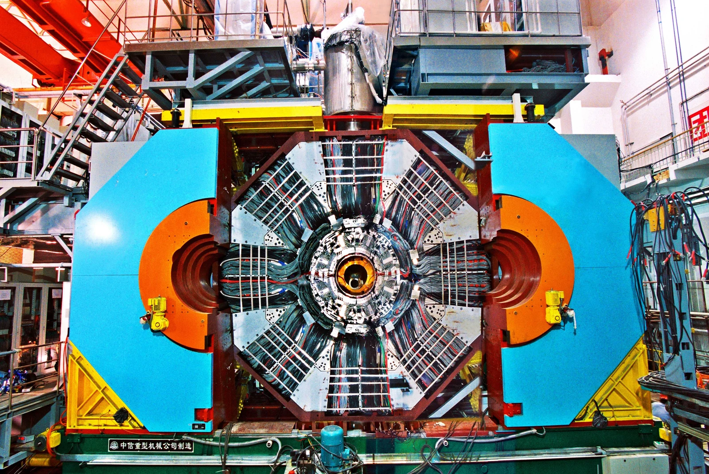
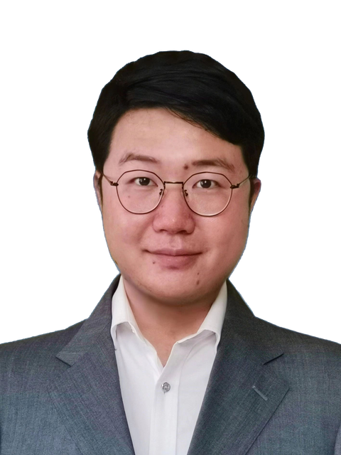
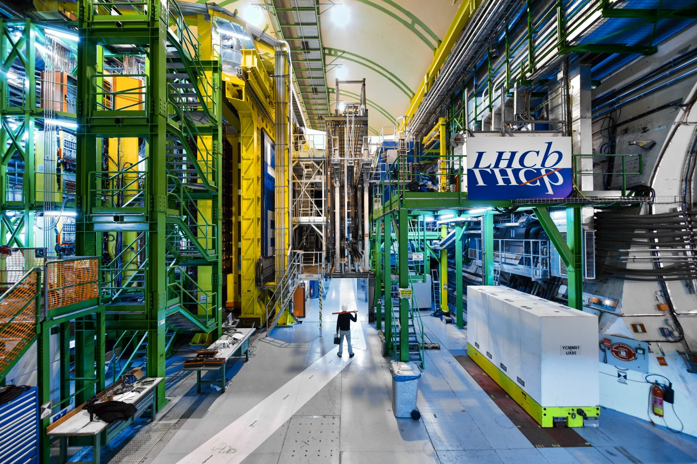

BESIII 位于北京正负电子对撞机 BEPCII 上，研究陶粲能区的正负电子碰撞。丰富的重子样本为自旋关联、对称性检验和强子相互作用研究提供了实验平台。
我的研究方向角分布分析 · CP 与电偶极矩 · 散射
图片：中国科学院高能物理研究所 ↗
实验粒子物理
博士后研究员 · 波兰国家核研究中心（NCBJ）
研究平台
BESIII 精密测量与 LHCb 粲重子振幅分析。

BESIII 位于北京正负电子对撞机 BEPCII 上，研究陶粲能区的正负电子碰撞。丰富的重子样本为自旋关联、对称性检验和强子相互作用研究提供了实验平台。

从好奇心出发
粒子物理想弄明白：世界由什么组成，最小的组成部分又遵循怎样的规律。
空气、水和我们的身体都由原子组成。原子里有电子和原子核；原子核中的质子、中子，内部还有夸克。到目前为止，实验还没有发现电子和夸克具有更小的内部结构。
CERN · 走进物质内部 ↗粒子经过探测器时，会留下微弱的电信号或沉积的能量。我们把这些线索拼起来，还原一次碰撞中发生的故事。有些粒子转瞬即逝，但它们衰变后留下的产物，仍能透露它们的存在。
CERN 的 CMS 实验 · 寻找线索 ↗电子有一个反物质伙伴——正电子：质量相同，电荷相反。可是，我们观测到的宇宙却几乎都是物质。为什么会这样？比较粒子与反粒子的细微差别，能帮助我们寻找线索；这个谜题仍未解开。
CERN · 反物质之谜 ↗参考 CERN 面向公众的科普资料编写。插图为示意，延伸阅读为英文。